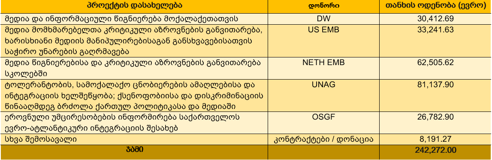
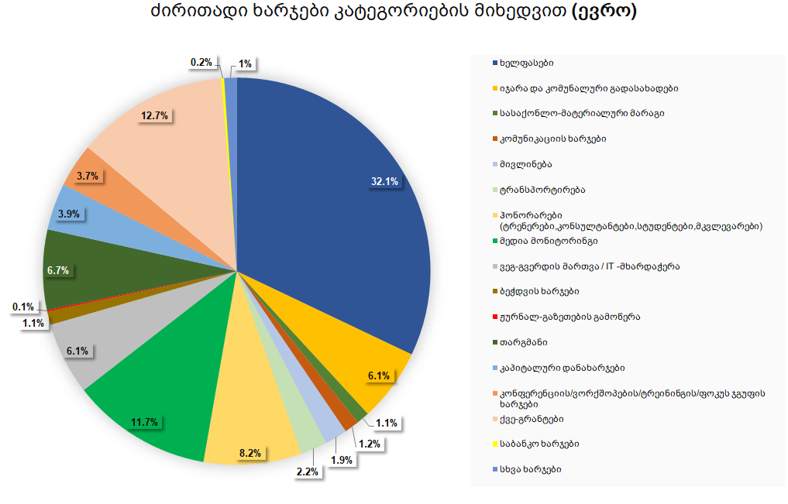
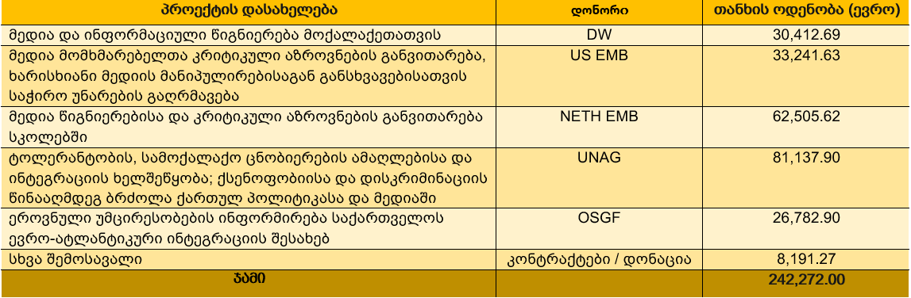
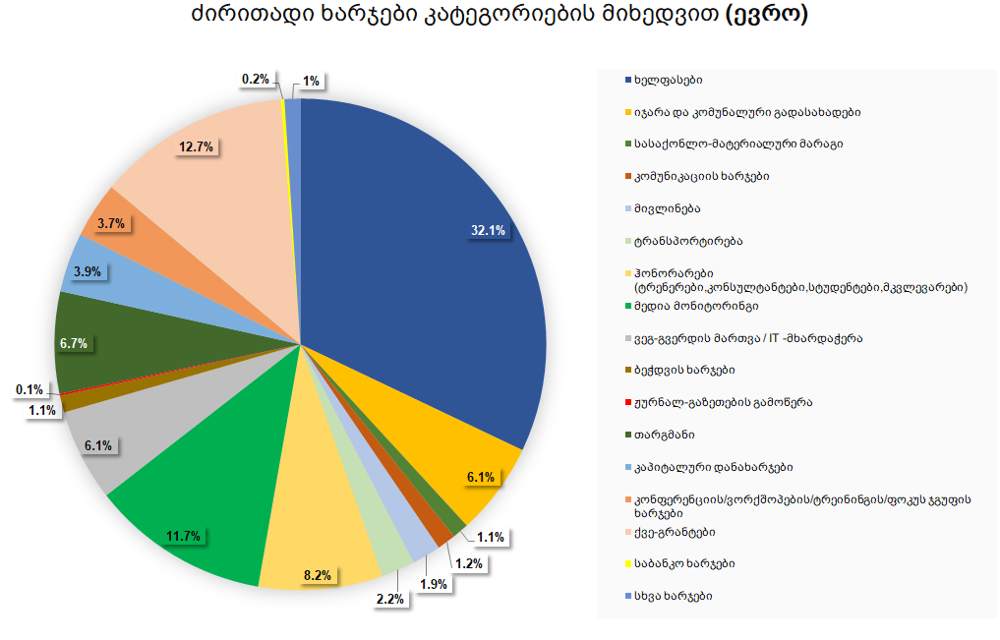

მედიის განვითარების ფონდი, MDF წარმოადგენს არასამთავრობო ორგანიზაციას, რომლის მიზანია ხელი შეუწყოს ღია და ინკლუზიური საზოგადოების
ჩამოყალიბებას; ადამიანის ფუნდამენტური უფლებების დაცვას; უმცირესობების სრულფასოვან ინტეგრაციას; გენდერულ თანასწორობას; მრავალფეროვნების
და პლურალისტური გარემოს დამკვიდრებას; სიტყვისა და გამოხატვის თავისუფლების დაცვას; მედიის პროფესიული და ინსტიტუციური განვითარებას;
თავისუფალი მედია გარემოს და მედიის ანგარიშვალდებულების სისტემების, თვითრეგულირების მექანიზმების დამკვიდრებას; მედიაწიგნიერების
განვითარებას; აქტიურ მოქალაქეობას და ახალგაზრულ აქტივიზმს.
მედიისგანვითარების ფონდი, MDF 2008 წლისაპრილში, პროფესიონალ ჟურნალისტთა ჯგუფისმიერ დაფუძნდა.
ორგანიზაციის ძირითადი მიმართულებებია: სიტყვისა და გამოხატვის თავისუფლება, ეთიკური ჟურნალისტიკა და ანგარიშვალდებულება; მედია წიგნიერება; ადამიანის
უფლებები; მრავალფეროვნება და ინკლუზიური საზოგადოება; გენდერული თანასწორობა; ახალგაზრდული ინიციატივების და სამოქალაქო აქტივიზმის მხარდაჭერა.
ედიის განვითარების ფონდი, MDF ეწევა კვლევით და საგანმანათლებლო საქმიანობას; ახორციელებს ადვოკატირებას; ატარებს ტრენინგებს, შეხვედრებს, საჯარო
დისკუსიებს, შემოქმედებით კონკურსებს. გამოსცემს სასწავლო და პროფესიულ ლიტერატურას, აწარმოებს მედია პროდუქციას და საგანმანათლებლო კამპანიებს, ასევე
ახდენს ახალგაზრდების მობილიზებას სამოქალაქო თუ საგანმანათლებლო აქტივობების განხორციელების მიზნით.
სახალხო დამცველთან არსებულმა რელიგიათა საბჭომ მედიის განვითარების ფონდი 2014 წელს ტოლერანტობის ქომაგად დაასახელა.
2016 წლიდან მედიის განვითარების ფონდი თანამშრომლობს ევროკავშირის სტრატეგიული კომუნიკაციის სამსახურთან თანამშრომლობს. ფაქტების გადამოწმების
ვებ-გვერდი "მითების დეტექტორი” კი ატლანტიკური საბჭოს ონლაინ პლატფორმის DisinfoPortal-ის პარტნიორია. 2019 წელს მედიის განვითარების ფონდმა
თანამშრომლობის შესახებ ხელშეკრულება შეერთებული შტატების გლობალური მედიის სააგენტოსთან გააფორმა.
თამარ კინწურაშვილი, აღმასრულებელი დირექტორი
თამარ ხორბალაძე, გამგეობის თავმჯდომარე
თამარ შამილი, აღმასრულებელი ვიცე დირექტორი
გიგა ზედანია, გამგეობის წევრი, უნივერსიტეტი
თამარ კინწურაშვილი, აღმასრულებელი დირექტორი
თამარ ხორბალაძე, გამგეობის თავმჯდომარე
სოფო გელავა, მედიაწიგნიერების პროგრამის ხელმძღვანელი
მარიამ პატარიძე, იურისტი
ხატია ლომიძე, მედია მკვლევარი
თამარ გაგნიაშვილი, მედია მკვლევარი
თინათინ გოგოლაძე, მონიტორინგის ჯგუფის ხელმძღვანელი
კომუნიკაციებისა და სოციალური მედიის მენეჯერი
ზვიად მჟავანაძე, რეგიონული კოორდინატორი
მარიამ ცუცქირიძე, მედია მკვლევარი
სოფო გოგაძე, მედია მკვლევარი
ნუცა ჭღენტი, კოორდინატორი
ბესიკ დანელია, დიზაინერი
მედიის განვითარების ფონდის (MDF) ქცევის კოდექსი
მედიის განვითარების ფონდის ყველა თანამშრომელი, ფონდთან დაკავშირებული ან მის დაქვემდებარებაში მყოფი ნებისმიერი პირი, რომელიც ასრულებს
მედიის განვითარების ფონდისათვის ან მისი სახელით, სამსახურეობრივი მოვალეობების შესრულებისას უნდა მოქმედებდეს კანონის დაცვით, კეთილსინდისიერად,
ეთიკურად და ორგანიზაციის საუკეთესო ინტერესების გათვალისწინებით.
სამუშაო სივრცის პატივისცემა
მედიის განვითარების ფონდის ყველა თანამშრომელი პატივს უნდა სცემდეს კოლეგებს. პერსონალური ურთიერთობებისას ნებისმიერი საფუძვლით დისკრიმინაცია ან
შევიწროვება დაუშვებელია.
პროფესიონალიზმი
სამუშაო სივრცეში ყველა თანამშრომელი კეთილსინდისიერებასა და პროფესიონალიზმს უნდა ავლენდეს. თანამშრომლები სამსახურეობრივ მოვალეობას
ბენეფიციარებისა და საზოგადოების მიმართ პატივისცემის პრინციპის დაცვით, პროფესიონალურად და დროულად უნდა ასრულებდნენ. მენეჯმენტმა თავისი
უფლებამოსილება ბოროტად არ უნდა გამოიყენოს. თანამშრომლები უნდა ცდილობდნენ, არ შეუშალონ ხელი სამუშაო პროცესს ან შეაფერხონ კოლეგების მუშაობა.
თანამშრომლები უნდა იცავდნენ სამუშაო განრიგს. დადგენილი სამუშაო საათებიდან გამონაკლისის დაწესება დასაქმებულსა და ადმინისტრაციას შორის
ურთიერთშეთანხმებით ხდება.
ორგანიზაციის საკუთრების დაცვა
ყველა თანამშრომელი ვალდებულია, მედიის განვითარების ფონდის მატერიალურ და არამატერიალურ საკუთრებას პატივისცემითა და მზრუნველობით მოეპყრას. მათ
არ უნდა გამოიყენონ ორგანიზაციის კუთვნილი აღჭურვილობა არადანიშნულებისამებრ და პატივი უნდა სცენ ყველა ტიპის არამატერიალურ სიკეთეს, მათ შორის
სასაქონლო ნიშანს, საავტორო უფლებებს, ანგარიშებს და მედიის განვითარების ფონდის მიერ გამოქვეყნებულ ნებისმიერ ინფორმაციას. თანამშრომლები მათ უნდა
იყენებდნენ მხოლოდ სამსახურეობრივი მოვალოებების შესრულების მიზნით. კონფიდენციალური ინფორმაცია
მედიის განვითარების ფონდის სამსახურეობრივი ინფორმაცია ღირებული აქტივია, რომელსაც ყველა უნდა გაუფრთიხლდეს. ორგანიზაციაში დასაქმებული პირები
ვალდებულები არიან, გამოიყენონ ორგანიზაციის კონფიდენციალური ინფორმაცია მხოლოდ სამსახურეობრივი მიზნებისათვის და მკაცრად დაიცვან ამგავრი
ინფორმაციის კონფიდენციალურობა. აღნიშნული დებულება ვრცელდება გაუვრცელებლობის შეთანხმების საფუძველზე მესამე პირისგან მიღებულ კონფიდენციალურ
ინფორმაციაზე. ინტერესთა კონფლიქტი
თანამშრომლებმა თავი უნდა აარიდონ ნებისმიერ პირად, ფინანსურ, პოლიტიკურ ან სხვა ტიპის ინტერესს, რომელსაც შეუძლია, ხელი შეუშალოს მედიის განვითარების
ფონდის საქმიანობას და თანამშრომლების მიერ სამსახურებრივი მოვალეობების შესრულების შესაძლებლობას ან ნებას. თანამშრომლები არ უნდა ახდენდნენ არც ერთი
პოლიტიკოსის ადვოკატირებას და არ უნდა იყვნენ ჩართულები მხარდამჭერ კამპანიაში. პოლიტიკის დოკუმენტები
ყველა თანამშრომელი ვალდებულია, გაეცნოს მედიის განვითარების ფონდის პოლიტიკის დოკუმენტებს და იმოქმედოს მათ შესაბამისად. შეკითხვების არსებობის
შემთხვევაში თანამშრომლებმა უნდა მიმართონ ადმინისტრაციას.
ფინანსური ანგარიში
 


